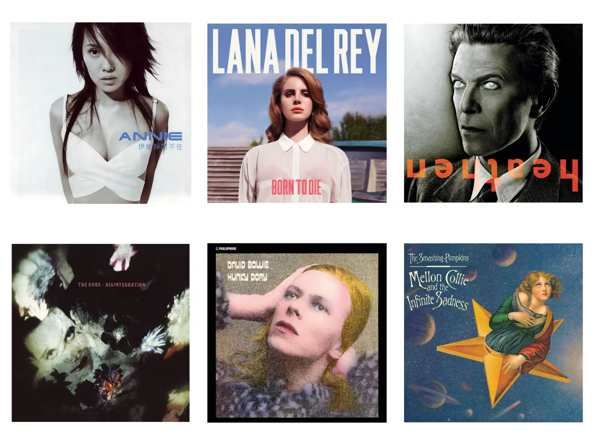
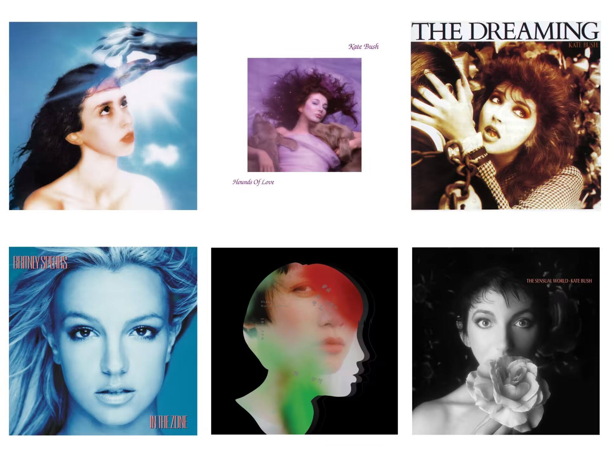
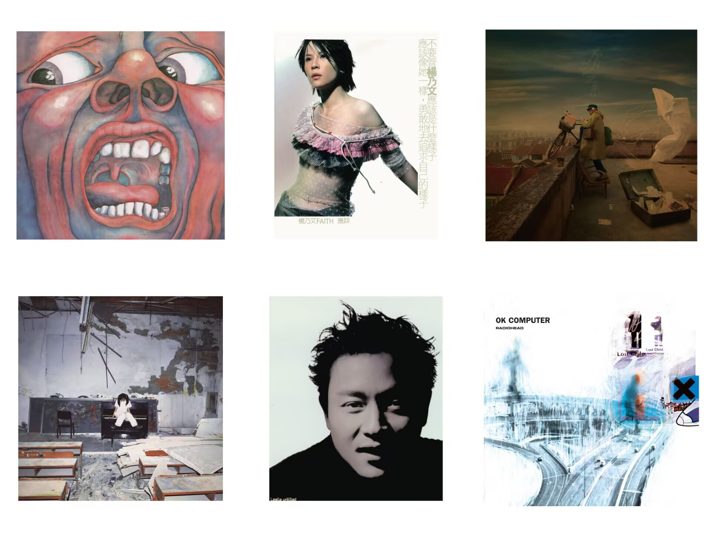
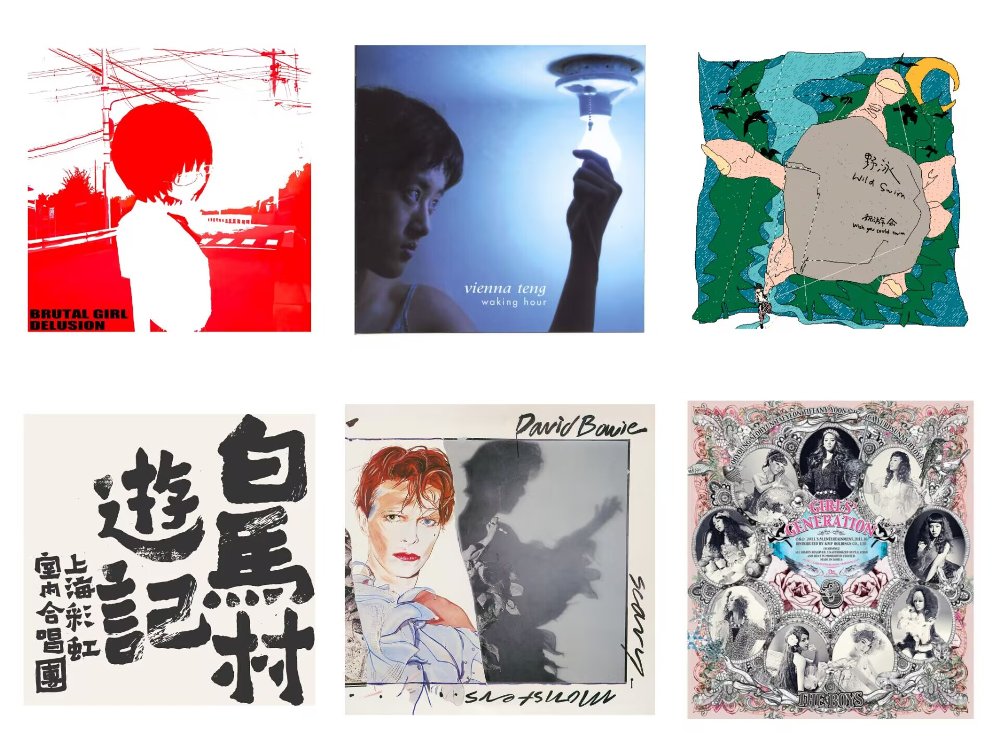
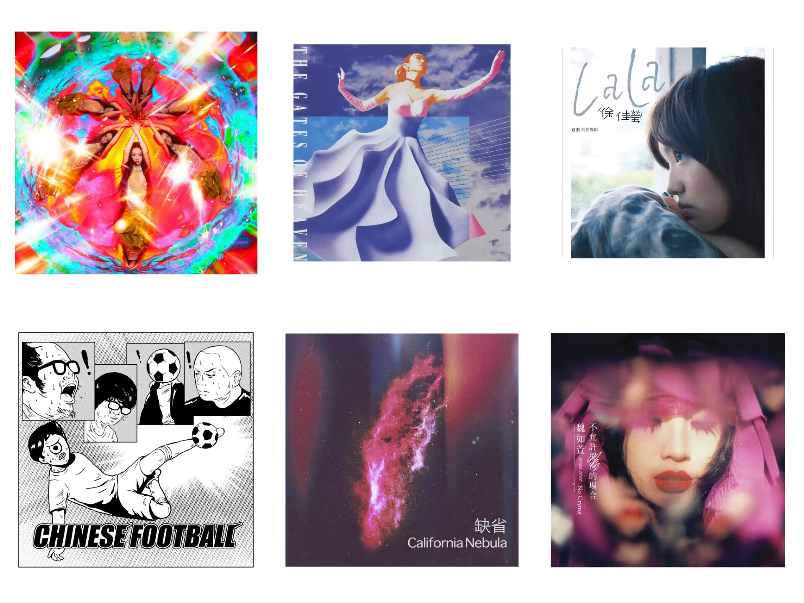
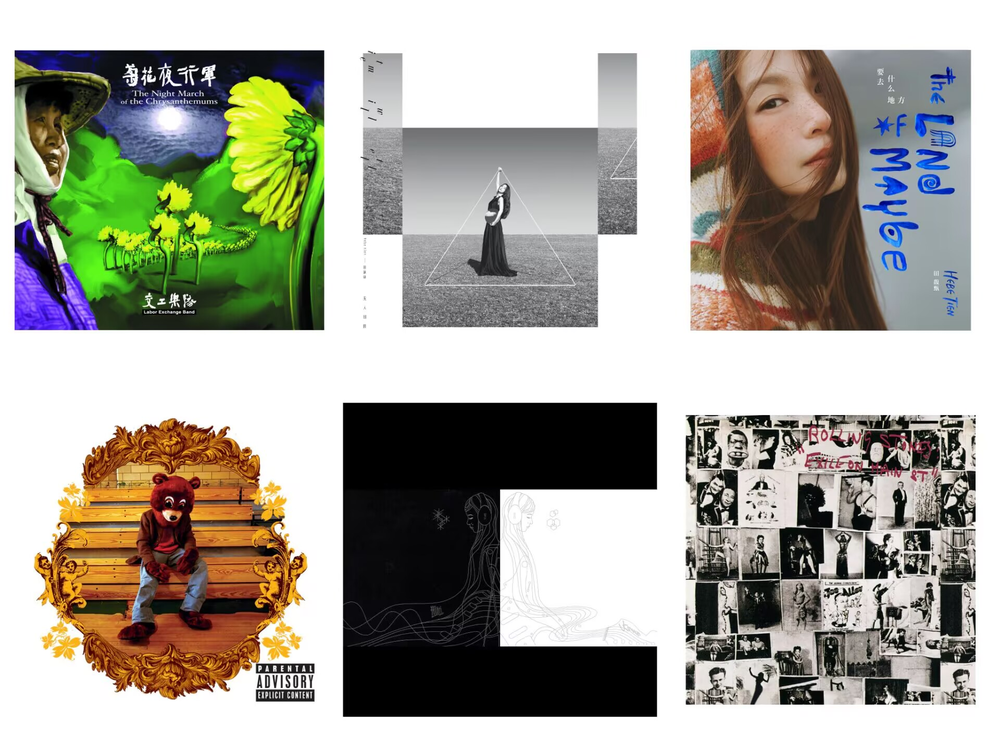
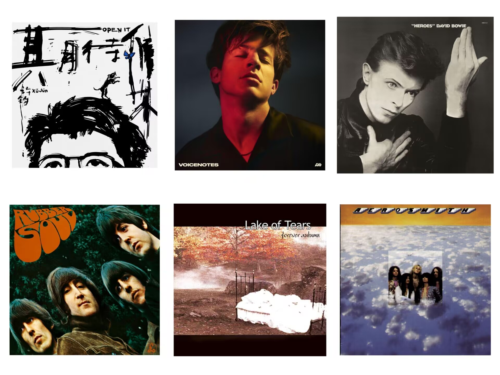
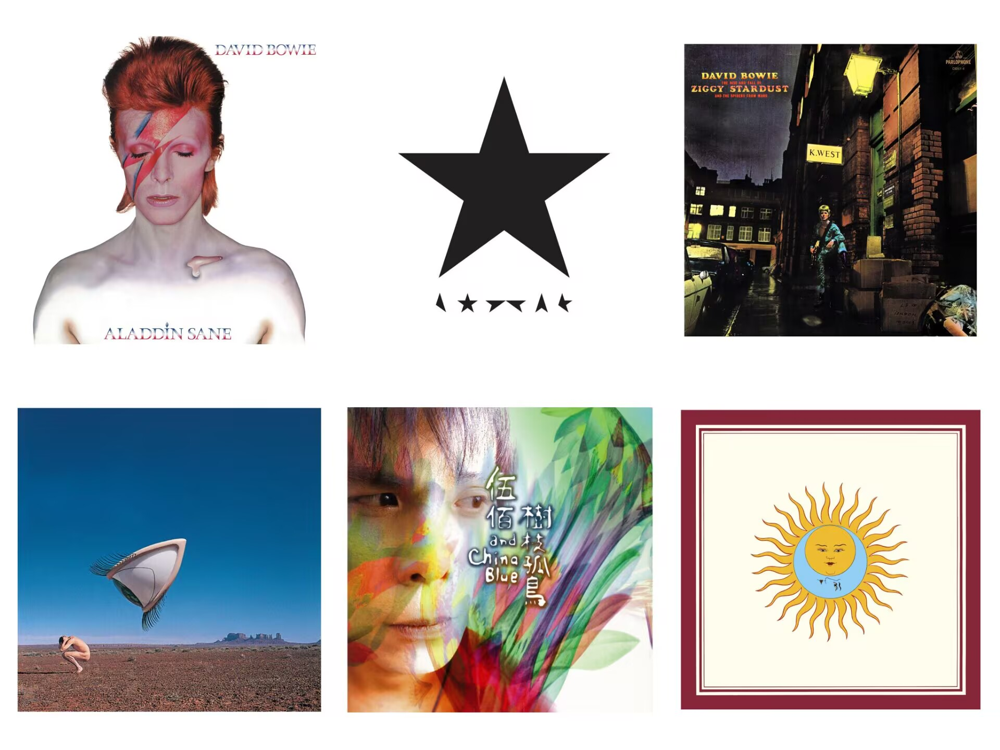
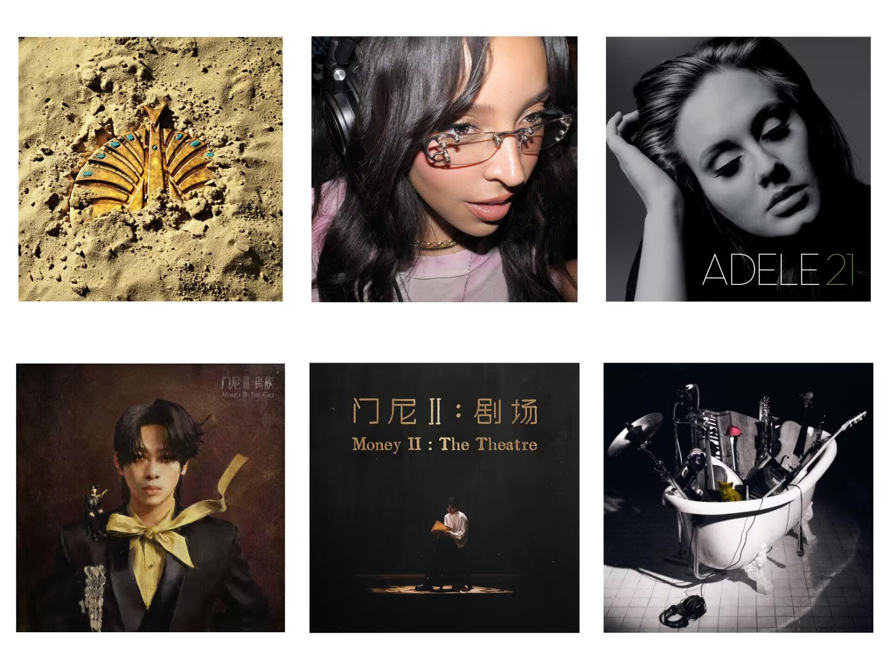

歌与行 2026 | 十月篇
被行程填满的十月结束了。去了两个很远的城市，打了三场比赛。一段很难割舍的经历也算是告一段落了。没有获得想要的结果又怎么会不遗憾呢，但困在遗憾里无法改变既定的结局。
好在备赛期间有大段时间给我品鉴音乐。比较沉迷 David Bowie 和 Kate Bush，震撼美味。下面大致按时间梳理一下这个月听过的专辑。

《关不住》伊能静
新奇且丰富的听觉体验。有同名曲那种奔放且略带粗粝的电子编曲，也有《假面的告白》这样极致私人化的表达。初听是在飞机即将落地的时候，耳机外轰鸣声渐渐隐去，原曲本就单薄的编曲在此完全消失。只留下反复叩问的人声“我是真的很假，但什么是真的呢”一阵头皮发麻。
《Born to Die》Lana Del Rey
听感上总体偏复古，打雷姐的唱腔很慵懒。封面美丽得很惊艳，但专辑内容对我而言吸引力不算很大。
《Heathen》David Bowie
到底谁能承受暮年Bowie这深沉的嗓音和汹涌的情感。不再像年轻时的风华绝代，但依旧真诚动人。
《Disintegration》the Cure
情绪的渲染做得很好，而且做法并不依赖阴郁的氛围。给人的感受像是，一个人在封闭的环境中希望渐渐被瓦解，但他仍想用最后的空间制造一些浪漫。听觉上宏大但不开阔。
《Hunky Dory》David Bowie
华丽而深刻。音乐剧般的宏大灿烂感。
《Mellon Collie and the Infinite Sadness》The Smashing Pumpkins
有点听不进去。可能是intro优美的钢琴旋律和后面的反差太大了（？

《Imaginal Disk》MagdalenaBay
有种眼前洒满亮晶晶泡泡的感觉。仙仙的飘飘的，应该是好听的，但不是我的类型。
《Hounds of Love》Kate Bush
听时让人心潮澎湃，听后就像水一样流走了。非常好专辑。
《The Dreaming》Kate Bush
天才之作。完美拿捏了怪诞感和流行性之间的尺度，循环听了好多次都有惊喜。
《In the Zone》Britney Spears
一般般吧，，为啥要把sexy作为专辑最突出的概念…
《藏着并不等于遗忘》魏如萱
好温柔的一张。纯粹的好听。
《the Sensual World》Kate Bush
太美了太梦幻了 Bush 奶奶，听了这张我好几天之内听不进去别的音乐。

《In the Court of the Crimson King 》King Crimson
全方位的听觉享受。大面积铺陈的器乐与其中点缀的各式表现力极强的人声搭配得天衣无缝。确实比red和云雀舌那几张入耳。
《应该》杨乃文
有气质有态度。杨乃文的嗓音沙哑的时候好绝。听到了两首陈绮贞的作品，感觉好亲切。
《劳动之余》声音玩具
很有质感的另类摇滚。
《手接我的回旋镖》张醒婵
惊悚，，听得我心悸。你赢了，你的过往经历沉重而深刻。对于喜欢的人来说这可能是神作，但我对此有些接受不能。还是听点别的缓一缓。
《Untitled》张国荣
只有五首歌，但每首都好听。小而精啊。
《OK Computer》Radiohead
这种颓废的气息还挺迷人的。我最喜欢的一张电台头。想以后专门给这张写一篇。

《Brutal Girl Delusion》红发少年杀人事件
听不懂，这就是另类摇滚吗
《Waking Hour》Vienna teng
整体听感尚可，但有些欠打磨，编曲稍显寡淡。更像是个人的吉他习作。
《野泳》祝游会
氛围很温柔，情绪的渲染做得不错。
《白马村游记》上海彩虹室内合唱团
一套不错的组曲，感觉彩虹唱什么都不会难听！
《Scary Monsters》David Bowie
好疯啊，但是我好喜欢。David Bowie 是天才。
《the Boys》少女时代
很好听！跟我印象里流水线预制菜式的kpop简直天壤之别。

《纯妹妹》单依纯
一张很有个人印迹的精品专辑，制作十分精良。可惜我大概不是此风格的受众（？
《天国のドア》松任谷由実
音色太陈旧，年代感有点太强了…不喜欢。
《Lala 首张创作专辑》徐佳莹
全芭乐专辑也可以这么美丽吗…我好喜欢这个时期lala的旋律写作，舒缓优雅，灵气四溢。
《Chinese Football》Chinese Football
不太懂数摇，但只论悦耳程度这张也是不错的。很有故事感。
《California Nebula》缺省
还不错，有点钉鞋的意思，作为共同的土地入坑的新听众觉得挺新鲜的。
《不允许哭泣的场合》魏如萱
是我心中waa最好的一张了。音乐和文本一样诡异但灵动，很有画面感。

《菊花夜行军》交工乐队
伟大的作品。尽管本人没有什么乡土情结，但我完全能够理解为什么那么多人听过这部作品后会饱含热泪。这是一首属于土地和农民的诗。
《无人知晓》田馥甄
不算惊艳，但还挺耐听的。
《要去什么地方》田馥甄
不错的新作，整体听感挺轻盈的。
《the College Dropout》Kanye West
精致但丝毫不落匠气，对我的耳朵很好。
《唄ひ手冥利～其ノ壱～》椎名林檎
给苹果跪了，翻唱集也能做得这么有个人风格，简直处处是惊喜。
《exile on main street》滚石
老派经典的摇滚。但是有点get不到。

《期待集》许钧
相比起摇滚歌手，许钧的气质更像一个诗人。这张专辑在音乐上有些清汤寡水，但是词值得咀嚼。随心所至，不拘一格。
《Voicenotes》Charlie Puth
理性上我应该不太喜欢这张…编曲太流水太预制，但没办法它旋律足够洗脑，听一遍就再也忘不掉了。
《Heroes》David Bowie
bowie叙事的能力真是独一份。就算完全不留意文本也足以抿出其中的挣扎与浪漫、隐忍与爆发。封面太经典。
《Rubber Soul》The Beatles
披头士封神路上第一张神专。用富有哲学色彩的文本探讨爱情与人生的方方面面。太经典太好听。
《Forever Autumn》Lake of Tears
很有记忆点的一张金属专辑。贯穿其中的弦乐大大增添了其凄美忧郁的色彩。
《Aerosmith》Aerosmith
听一些燥热的副歌时有明显的失重感。不愧是空中铁匠。

《Aladdin Sane》David Bowie
概念爆炸。围绕着粉色闪电人用叙事的方式探讨了名望，暴力，药物，人格分裂等等等等社会议题。延续标志性的华丽摇滚风格。
《Blackstar》David Bowie
老爷子的遗作。唉听到这张还是挺难受的吧，一个意气风发的巨星最终还是走到生命的尽头。这张的传奇之处在于，它让自己的死亡本身也成为了一件艺术品。
《The Rise and Fall of Ziggy Stardust and the Spiders from Mars》David Bowie
近期听的最多的一张。从齐格星尘的形象设计，前后贯穿的精巧叙事，到其中融入的大量对社会议题的探讨和欧美摇滚作品中少见的人文关怀，一切都好到了近乎完美的地步。最重要的是即使这些你都完全不关心，它本身也是一张足够好听的专辑，每一首歌的旋律都能让你记得很久。
《Bury the Hatchet》The Cranberries
旋律很好听的一张另类摇滚。
《树枝孤鸟》伍佰
第一次听纯闽南语专辑。民歌的色彩非常浓烈。人声合唱部分很精彩。
《Larks’ Tongues in Aspic》King Crimson
重新又听了一遍云雀舌。说实话还是完全听不懂。会不会有点太实验太自由了。

《大発见》东京事变
偏流行的一张。我对东变后期苹果退出编曲后的作品都不算特别喜欢，比如这张。没有电的城市很好听。
《popstar》Tinashe
不知道怎样去界定这张专辑的风格。可能迷幻/电子？的确身边很多人都很喜欢，不过我不是很能get到。
《21》Adele
小学的时候就对这张专辑产生了初步的印象，没想到现在才第一次完整听。顶级的旋律写作，好几首爆到不能再爆的大hit。
《门尼III:贵族》&《门尼II:剧场》门尼
二专>三专。感觉三专有点形式大于内容了。我心里门尼算是华语新生代音乐人里最优秀的一批了，真的希望他的发展能越来越好。下个月要去看他的演唱会，期待。
《平成风俗》椎名林檎
苹果的又一张神作。整张专辑的每个角落都诠释着物哀美学。时时刻刻都能听见病态的精神分裂者歇斯底里地呼喊，却给人以华丽空旷之感。